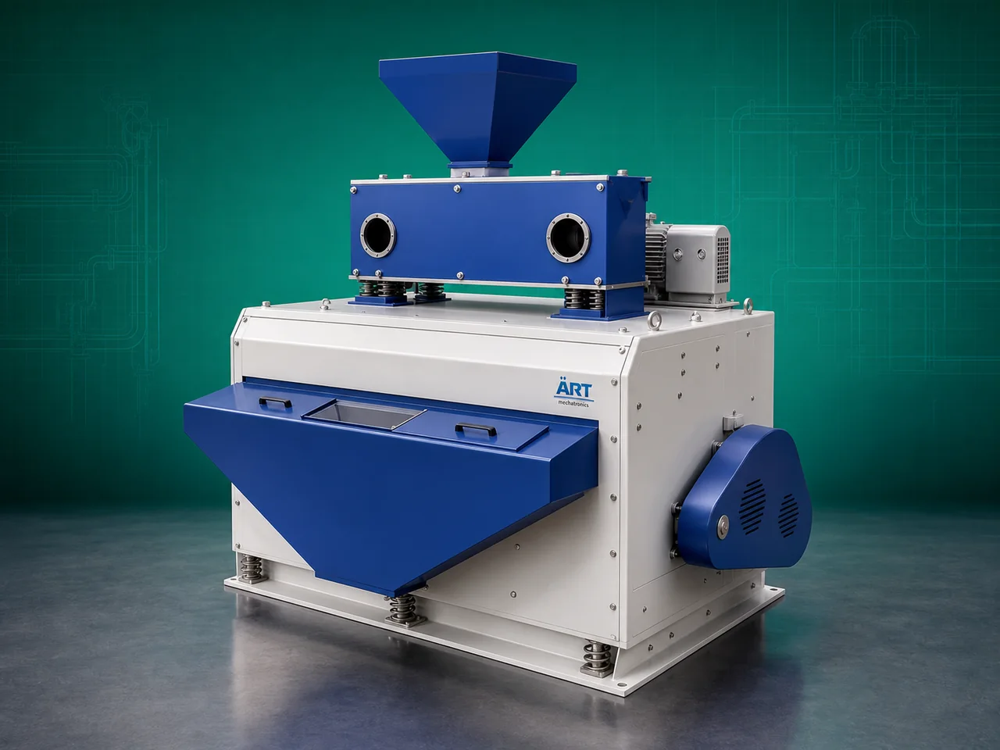

Destoner Machine (Industrial Stone & Heavy Impurity Separation System)
A Destoner Machine, also known as a Stone Separator Machine, Grain Destoner, or Vibro Destoning System, is an essential industrial cleaning equipment designed for removing stones, sand, mud balls, metal particles, glass pieces, and other heavy impurities from grains, seeds, pulses, spices, food products, and agro materials.

About the Destoner Machine
Destoners play a critical role in industrial processing plants by improving:
- Product purity
- Food safety
- Product quality
- Equipment protection
- Processing efficiency
The machine works on the principle of:
- Density difference
- Vibratory separation
- Air aspiration
- Gravity-based movement
where heavier particles such as stones are separated from lighter food products through controlled vibration and airflow.
Different industries require different types of destoner machines depending on:
• Product characteristics
• Capacity requirements
• Degree of automation
• Dust control requirements
ART Mechatronics offers a complete range of industrial destoner machines, engineered for high separation efficiency, continuous operation, dust-free processing, and reliable industrial performance.
One machine, many names
Buyers search for this equipment under many terms — we manufacture all of them:
Working Principle of Destoner Machine
Products may include:
- Grains
- Pulses
- Seeds
- Spices
- Food products
Creates density-based separation zone
Types of Destoner Machines
- 1. Closed Deck Destoner Machine (With Cyclone & Blower System)
This advanced industrial destoner comes with:
- Closed vibrating deck
- Cyclone separator
- Blower system
- Aspiration ducting Features:
- Dust-free operation
- Better separation efficiency
- Cleaner factory environment
- Suitable for continuous industrial production
Applications:
- Food processing plants
- Spice industries
- Grain processing plants
- Seed industries
- 2. Open Chhanna Type Destoner Machine
This economical and simple model uses:
- Open vibrating screen deck
- Basic vibration separation mechanism Features:
- Easy operation
- Low maintenance
- Lower investment cost
- Semi-manual working system
Applications:
- Small grain cleaning units
- Agro processing plants
- Small food industries
- 3. Single Deck Destoner Machine
Specially designed for:
- Compact industrial applications
- Medium-capacity processing
- Semi-automatic operation Features:
- Single vibrating deck
- Compact footprint
- Efficient heavy impurity separation
Applications:
- Rice mills
- Grain processing units
- Pulses and seed industries
- 4. Vibro Destoner Machine
Uses:
- Vibratory motion
- Controlled airflow for accurate and continuous destoning.
- 5. Gravity Destoner Machine
Uses advanced:
- Gravity separation technology
- Air pressure balancing for highly efficient stone removal.
- 6. Multi Deck Industrial Destoner
Heavy-duty system designed for:
- Large production plants
- High-capacity industrial cleaning operations
Industries Using Destoner Machine
🌾 Grain Processing Industry
- Wheat, maize, rice cleaning
🍚 Rice Mill Industry
- Paddy and rice destoning
🍃 Pulses Industry
- Dal and pulse cleaning
🌶️ Spice Industry
- Spice impurity separation
🌱 Seed Processing Industry
- Seed cleaning and grading
🍃 Food Processing Industry
- Raw material purification
🐄 Feed Industry
- Animal feed ingredient cleaning
Features & Advantages
- Efficient removal of stones and heavy impurities
- Improves product quality and food safety
- Protects downstream machinery from damage
- Multiple industrial models available
- Dust-free operation options available
- Continuous and high-capacity processing
- Energy-efficient performance
- Heavy-duty industrial construction
- Low maintenance operation
Technical Highlights
- Separation Technology:
- Vibratory separation
- Air aspiration
- Gravity separation
- Deck Types:
- Open deck
- Closed deck
- Single deck
- Multi deck
- Dust Control:
- Cyclone separator
- Blower system
- Aspiration ducting
- Construction: Stainless Steel / Mild Steel
- Operation:
- Manual
- Semi-automatic
- Fully automatic
Turnkey Destoning Solutions
ART Mechatronics offers:
- Complete destoning plant design
- Cyclone and dust collection systems
- Conveying and material handling integration
- Multi-stage cleaning solutions
- Installation & commissioning
- After-sales service & AMC
Why Choose Art Mechatronics
- Expertise in industrial cleaning and separation systems
- Customized destoning solutions for multiple industries
- High-performance and durable machine construction
- Energy-efficient and reliable industrial designs
- Proven industrial performance across sectors
Applications
- Rice Mills
- Grain Processing Plants
- Seed Processing Units
- Spice Manufacturing Plants
- Pulse Processing Facilities
- Food Processing Industries
Related Cleaning, Sorting & Grading machines
Get pricing & specs for the Destoner Machine
Share the product, target capacity, current process and plant location. These details help our engineers discuss the right machine or line configuration.
One partner, from design to start-up
ART Mechatronics designs, manufactures, installs and commissions your Destoner Machine solution with regional presence in India, UAE and Thailand.